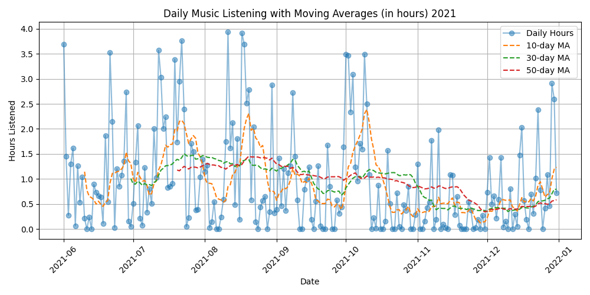
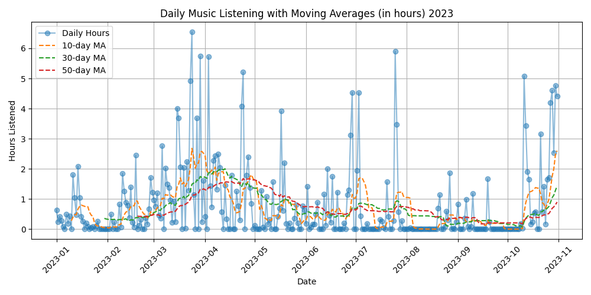
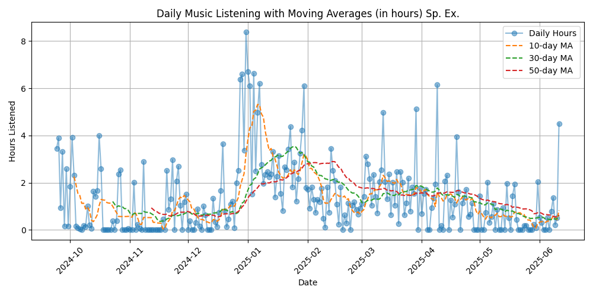
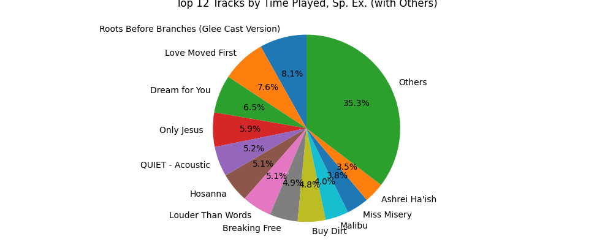
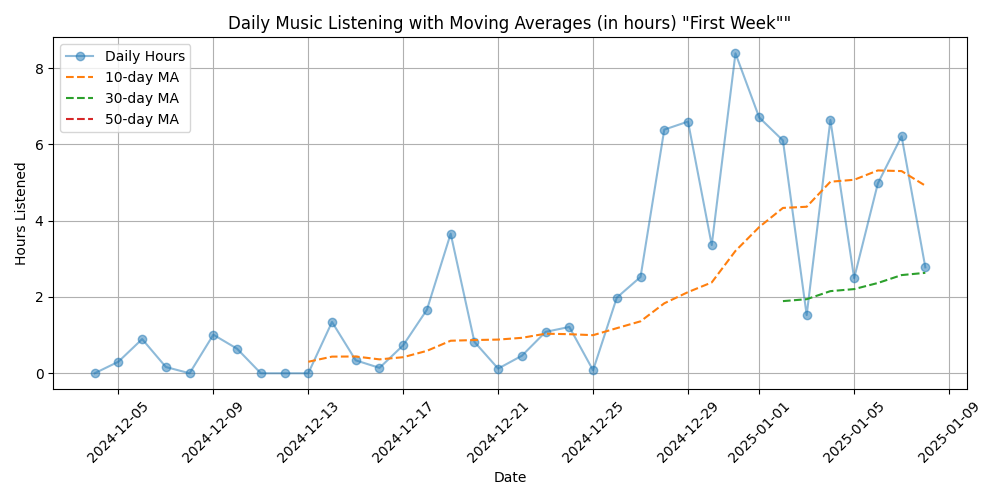
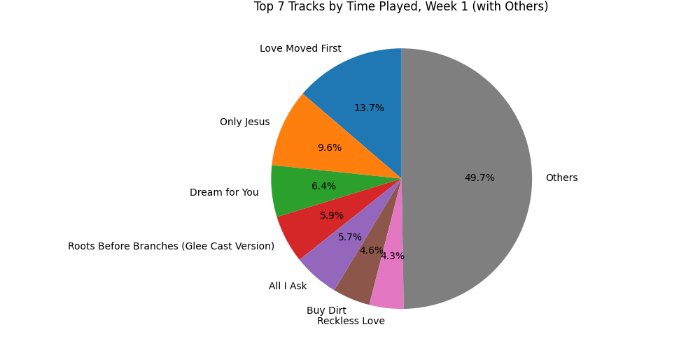

The Signal and the Noise: Building a Predictive Wellness Model from Personal Data

The Signal and the Noise: Building a Predictive Wellness Model from Personal Data
How are you really doing and what do you need right now to be at your best?
It’s a simple question, but I’ve always struggled to answer it. Sometimes I think I’m doing great when I’m actually running on fumes. What if there were a way to know for sure? What if you could look at the digital patterns of your own life; the music you stream, the websites you browse, the videos that resonate… and in so doing see a real, data-driven reflection of your well-being? Almost like a personal check-engine light.
This question has obsessed me for years, and it’s led me on a journey to build a system from scratch to answer it. It’s a three-stage process, and it starts with forging the vessel itself: a personal computer designed to be a second brain.
Second Brain PC
No, I don’t have the tech to literally build another brain. The project name is based off of a concept from author Tiago Forte called Building a Second Brain. In the book, he talks about creating an organized system of creativity, summarizing concepts from thought leaders like Octavia Butler, David Allen, and Richard Feynman. He mentions that at times of great transition, great thinkers like Locke and DaVinci kept “commonplace books” that allowed them to make sense of what was happening around them. I’ve been using this system for 2.5 years and here’s a snapshot of some of today’s fruit:
 Figure 1: An example of my notes app designed with principles from Tiago Forte
Figure 1: An example of my notes app designed with principles from Tiago Forte
He wrote another book PARA where he talks about digital organization without the creativity spin. He uses: Inbox, Projects, Areas, Resources, and Archives. I used that for a while but then did a creative pivot; Sunlight, Fruits, Roots, Nutrients, and Arboretum.
A few months after implementing the PARA (FRAN) system, I also started archiving all of my digital files across time. Google Takeout, old computers, and I even downloaded a low-data backup of wikipedia. I built a webscraper that allowed me to download data from one of my favorite podcasts. They provide free resources that are already paid for by their community, so it didn’t feel like an ethics breach to download these. I started realizing the need to have some type of local server to help me with data collection.
Hardware Design
This January I started spec-ing out an AI PC. I wanted to get an NVIDIA 5090 and was tenth in line at microcenter for release; apparently they only had five üò≠. Fortunately, one of the guys in line sold me a cheap 3090. I really wanted to be able to use some open-source models with my data, but not have to upload my data to anyone else‚Äôs platform. I realized I was making a much bigger system than I originally thought.
I gutted my old PC and redesigned it with Deep Learning in mind (Ryzen 7 5700x, 64 GB RAM, NVIDIA 3090). I knew it didn’t have to be INCREDIBLY powerful, just enough to do some local image generation and run some local models; I’ve even had some rudimentary video generation. The problem is, whenever I ran those it maxed the VRAM used on the box. I’d need another machine to handle things like API calls and run “always-on” code, so I purchased a cheap NUC to handle this for me.
I’ve always struggled to organize my data across platforms! I wanted to harmonize my data and so I realized that a single point of truth would be most effective. I researched local ways of implementing this and discovered that Seafile and NextCloud were the best options. I went with NextCloud because based on the file storage method, it was way easier to interact with local files than the other option.
As of right now, I have almost everything set up. I have a cloud backup service, and a local backup or two. I’m planning to work with a friend who does security red-teaming for “Big Tech” to help me make it more secure. The docker setup and nextcloud have been a bit finnicky, but everything is generally organized. My vision was something like JARVIS from Iron Man; at least, one that never turns into a synthezoid.
Potential System Applications
- Remotely accessible personal library (NAS) of as much data as I can imagine
- Personal AI API platform
- I could setup a simple request sender via google gemini voice that can be a personal secretary and help me send/monitor texts and dms across social media platform
- I have several more, but I’m keeping them under wraps for now.
- Enables the following projects. The Spotify API only allows me to grab the last 50 songs of my history. I’d need something that repeatedly scrapes my data and logs it for the following ideas to work.
The Spotify Examen: Finding a Signal in the Noise
I got my wrapped playlist from 2023 in December, and I was noticed how my top songs were suspiciously correlated to the things that had happened that year. I wondered if my spotify data could somehow be used for personal insight. There’s something incredibly powerful about leveraging data in this way! If I just take a survey, I might see the questions and engineer a response that I think someone wants to hear. I am incredibly honest with spotify about what I want to never listen; I never choose to listen to something I don’t want to hear. I downloaded my data and did a brief proof of concept:

Figure 2: An example of daily listening habits from a stable period, the second half of 2021

Figure 3: An example of daily listening habits from a turbulent period, summer 2023
This is exactly what I was looking for! See that flatline in July 2023? That was a total personal crash period for me and it was reflected in my data without me even knowing it.
I did the prototype above in fall of 2024. I recently finished a period of deep guided reflection called the Spiritual Exercises. Through this, I got more familiar with the concept of finding Spirit in all things. Theoretically that should include my data; ALL of it. I’d like to keep exploring this concept. I started analyzing the time period for this meditation/prayer retreat; 9/24/24-7/15/25. I also broke it down just by a single “Week” of the exercises (which in this case was about a month long).
Truncated Full Spiritual Exercises

Figure 3: Listening data for all the Exercises, except for the final month

Figure 4: A simple distribution of the most commonly listened to songs during the exercises
‘First Week’ of Spiritual Exercises

Figure 5: Listening data for all the “First Week” of the Exercises (38 days)

Figure 6: A simple distribution of the most commonly listened to songs during the ‘First Week’
The most fascinating thing for me here is how the lyrics of the song I listened to MOST during Week 1 has lyrics that correspond directly to the themes of Week 1! To me that’s wild beyond imagination.
Implications and Next Steps
- I’d continue to do this for the rest of the 9 month retreat and report my findings. Well, I’d at least report them to myself. Not sure what level of depth I’ll go into with this publicly, I’m still deciding.
- I’d break the data down by each of the four “weeks”, the preparation beforehand, and the “election” period afterwards.
- I’d add more features to this data and try and add more visuals. There’s no end to creative music theory, lyrical sentiment analysis, trend analysis features that could be engineered.
- I’m still waiting on spotify to give me my data! I put in a request recently but the data was incomplete on their end; it stopped on June 11th, but it should’ve gone until Aug 7. We’ll see what else I think of my the time I finally get my full dataset.
Forging a Soul Mirror
I credit the majority of this post to my Second Brain system. It’s been amazing to watch an idea develop from a tiny seed/bullet point into something fully fledged like what I’m about to describe. I’ve known I’ve needed to make a final project idea to finish the FastAI part 1 course for a few months now. Originally I wanted to see if I could use my headspace data and my fitbit heart rate to see if I could predict when I’m meditating based on my heart rate. If so, I wouldn’t need to rely on my headspace data, I’d just be able to extrapolate it from my heart rate data.
I’ve wanted an automated way to track “how I’m doing”. People sometimes say, “Hey, how are you?” and I don’t always know how to respond. Sometimes I think I’m doing great but I’m really not. If I could create some type of data-driven Personal Wellness Index based on my actions, it might be really helpful. So the question I’d be using ML/AI to answer would be, “What digitally recorded habits predict my highest positive experiences”. I already know my daily listening marginally correlates; what else could help me see myself more clearly?
Of course, if you want to use ML to do this, you need to somehow label the data. Happy is a pretty arbitrary adjective to measure with data. Fortunately, I’ve been keeping a daily Examen every day since mid-December. If you haven’t heard of it, it’s essentially a prayerful daily review focusing on the most significant emotional/spiritual occurrences of the day. So theoretically I’d be able to use this to create a metric to optimize for. At the very least, I could use an LLM to analyze all of these and predict a “consolation/desolation metric” for each day; a number between -2 and 2. From there, I’d be able to leverage ALL my data and optimize some type og PWI. When I say ALL, this includes (but is not limited to): * spotify * youtube * browsing history * journaling * sent emails * sent texts * fitbit HR data
Conclusion: The Soul Mirror Awaits
So, this is the plan. It’s a journey in three stages, moving from the physical to the digital to the predictive.
- Stage 1: Forging the Vessel. Building a custom, secure, two-part computer system to serve as a private “Second Brain.”
- Stage 2: Polishing a Corner. Proving the concept with the Spotify Examen, finding a clear signal of my inner life in the noise of my listening data.
- Stage 3: Assembling the Mirror. Unifying all of my data streams—from my heart rate to my journal entries—to train a model that can answer a simple, vital question: “How am I really doing?”
I started this project to find a data-driven reflection of my own well-being—a personal check-engine light for the soul. Each stage is a deliberate step toward building that mirror. The hardware is the frame, the data pipelines are the silvering, and the machine learning model is the final polish that will, hopefully, reveal a clear image.
The experiment is personal, but the question is universal. What will I see when I’m finally able to look? I’m excited, and a little nervous, to find out.
But creating such a powerful tool for self-reflection inevitably raises even bigger questions about privacy, ownership, and what it means to be human in a digital world. I’ll explore those implications in my next post.